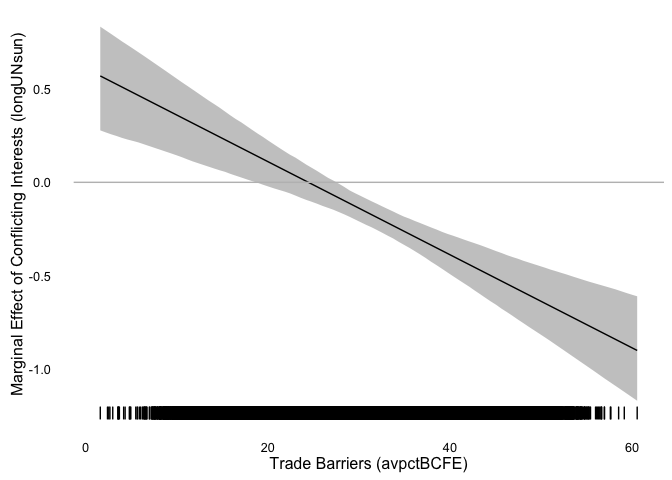

Assignment 05
Solutions
knitr::opts_chunk$set(cache = TRUE, autodep = TRUE)0.1 Libraries Used
library("pols503")
library("rio")
library("ggplot2")
library("dplyr")
library("broom")
library("xtable")0.2 Data
db <- import("TradeConflict.dta")0.3 Model
This model is similar to their Model 1 in Table 1 (p. 676):
mod1 <- lm(lnrtrade ~ lnrpciab + avremote + landlocked + island +
landratio + pciratio + jointdem + laglnrtrade +
lnrgdpab + lndist + logUNsun * avpctBCFE,
data = db)0.4 Questions
A: Create a new variable avpctBCFEcat3 by splitting the variable avpctBCFE into 3 categories.
db <- mutate(db, avpctBCFEcat3 = cut(x = avpctBCFE, breaks = 3,
labels = c("low", "medium", "high")))B: Run a new version of mod1 (mod2) but in this case ignore the interaction effect between the variables logUNsun and avpctBCFE, and substitute the variable avpctBCFE for the new categorical you just created.
mod2 <- lm(lnrtrade ~ lnrpciab + avremote + landlocked + island +
landratio + pciratio + jointdem + laglnrtrade +
lnrgdpab + lndist + logUNsun + avpctBCFEcat3,
data = db)C: Plot the predicted values of the model mod2 against the covariate logUNsun. Draw a linear regression line on it.
pred_mod2 <- augment(mod2)
ggplot(pred_mod2, aes(x = logUNsun, y = .fitted)) +
stat_binhex() +
geom_smooth(method = "lm")
D: If you used geom_point() in the previous plot, you probably saw that there are a lot of data points. Replicate the same plot using stat_binhex() instead of geom_point(). You can find the documentation here.
E: Take a look at the plot and at the coefficient for logUNsun in mod2. What can you say about the relationship betweeh this covariate and the outcome variable lnrtrade?
F: Replicate the same plot (logUNsun v. fitted values of mod2) but in this case use again geom_point() and color the dots differently depending on their values for avpctBCFEcat3. Make sure you also plot 3 different lines describing the relationship between logUNsun and the predicted values of lnrtrade for each group of avpctBCFEcat3. What do you see? How would you interpret this new plot?
ggplot(pred_mod2, aes(x = logUNsun, y = .fitted, fill = avpctBCFEcat3)) +
stat_binhex(alpha = 0.6) +
geom_smooth(method = "lm", aes(color = avpctBCFEcat3), lwd = 2, se = FALSE)
G: Run a new model (mod3) similar to mod2 but in this case interact the variables logUNsun and avpctBCFEcat3.
mod3 <- lm(lnrtrade ~ lnrpciab + avremote + landlocked + island +
landratio + pciratio + jointdem + laglnrtrade +
lnrgdpab + lndist + logUNsun * avpctBCFEcat3,
data = db)H: Keeping all the control variables at their means, calculate the predicted values for the following scenarios:
| # | logUNsun |
avpctBCFEcat3 |
|---|---|---|
| 1 | 0 | low |
| 2 | 1 | low |
| 3 | 0 | medium |
| 4 | 1 | medium |
| 5 | 0 | high |
| 6 | 1 | high |
controls <- c("lnrpciab", "avremote", "landlocked", "island",
"landratio", "pciratio", "jointdem", "laglnrtrade",
"lnrgdpab", "lndist")
scenarios <- data.frame(logUNsun = rep(c(0,1), 3),
avpctBCFEcat3 = c(rep("low", 2), rep("medium", 2),
rep("high", 2)))
for (var in controls) {
scenarios[,var] <- mean(db[,var], na.rm = TRUE)
}
pred_scenarios <- predict(mod3, newdata = scenarios)I: Calculate the following:
- `dif1`: Difference between the predicted values of scenarios 2 and 1: (`logUNsun` == 1 & `avpctBCFEcat3` == low) - (`logUNsun` == 0 & `avpctBCFEcat3` == low).
- `dif2`: Difference between the predicted values of scenarios 4 and 3: (`logUNsun` == 1 & `avpctBCFEcat3` == medium) - (`logUNsun` == 0 & `avpctBCFEcat3` == medium).
- `dif3`: Difference between the predicted values of scenarios 6 and 5: (`logUNsun` == 1 & `avpctBCFEcat3` == high) - (`logUNsun` == 0 & `avpctBCFEcat3` == high).
- `dif4`: Difference between the predicted values of scenarios 3 and 1: (`logUNsun` == 0 & `avpctBCFEcat3` == medium) - (`logUNsun` == 0 & `avpctBCFEcat3` == low).
- `dif5`: Difference between the predicted values of scenarios 5 and 1: (`logUNsun` == 0 & `avpctBCFEcat3` == high) - (`logUNsun` == 0 & `avpctBCFEcat3` == low).
- `dif6`: Difference between `dif2` and `dif1`.
- `dif7`: Difference between `dif3` and `dif1`.dif1 <- pred_scenarios[2] - pred_scenarios[1]
dif2 <- pred_scenarios[4] - pred_scenarios[3]
dif3 <- pred_scenarios[6] - pred_scenarios[5]
dif4 <- pred_scenarios[3] - pred_scenarios[1]
dif5 <- pred_scenarios[5] - pred_scenarios[1]
dif6 <- dif2 - dif1
dif7 <- dif3 - dif1J: Explain in your own words what do all these differences represent.
dif1: The slope oflnrtrade ~ logUNsunwhen we only consider dyads whereavpctBCFEcat3== low.dif2: The slope oflnrtrade ~ logUNsunwhen we only consider dyads whereavpctBCFEcat3== medium.dif3: The slope oflnrtrade ~ logUNsunwhen we only consider dyads whereavpctBCFEcat3== high.dif4: The difference inlnrtradebetween dyads whereavpctBCFEcat3is low and dyads whereavpctBCFEcat3is high, when there is no conflicting interests between the countries (logUNsun== 0).dif5: The difference inlnrtradebetween dyads whereavpctBCFEcat3is low and dyads whereavpctBCFEcat3is high, when there is no conflicting interests between the countries (logUNsun== 0).dif6: The difference between the slopes oflntrade ~ logUnsunwhenavpctBCFEcat3is medium andavpctBCFEcat3is lowdif7: The difference between the slopes oflntrade ~ logUnsunwhenavpctBCFEcat3is high andavpctBCFEcat3is low
K: Create a dataset (differences) with all these differences
differences <- data.frame(dif1, dif2, dif3,
dif4, dif5, dif6, dif7)
differences## dif1 dif2 dif3 dif4 dif5 dif6
## 2 0.6507081 -0.08007327 -0.3476271 0.04524175 -0.08913526 -0.7307814
## dif7
## 2 -0.9983352L: Create and print a table showing the mod1 coefficients, standard errors, t-statistic and p.value for only the Intercept and the covariates: logUnsun, avpctBCFEcat3, and their interactions.
regtab3 <- tidy(mod3)
regtab3 <- regtab3[c(1,12:nrow(regtab3)),]
regtab3## term estimate std.error statistic
## 1 (Intercept) -4.35914077 0.24857807 -17.5363048
## 12 logUNsun 0.65070810 0.11036960 5.8957183
## 13 avpctBCFEcat3medium 0.04524175 0.05091200 0.8886265
## 14 avpctBCFEcat3high -0.08913526 0.06447025 -1.3825796
## 15 logUNsun:avpctBCFEcat3medium -0.73078137 0.11457157 -6.3783834
## 16 logUNsun:avpctBCFEcat3high -0.99833520 0.17212208 -5.8001576
## p.value
## 1 1.118084e-68
## 12 3.750183e-09
## 13 3.742074e-01
## 14 1.667989e-01
## 15 1.802485e-10
## 16 6.657977e-09M: Compare the coefficients to the differences you previously calculated. Can you now interpret the coefficients?
N: Keeping all the other covariates at their mean, use mod3 to predict (+ 95% confidence interval) the following 300 scenarios. Hint: create a new dataset (scenarios2) containing the information of all these scenarios and use it for the newdata argument in the predict() function.
| # | logUNsun |
avpctBCFEcat3 |
|---|---|---|
| 1 | min(logUNsun) |
low |
| … | … | low |
| 100 | max(logUNsun) |
low |
| 101 | min(logUNsun) |
medium |
| … | … | medium |
| 200 | max(logUNsun) |
medium |
| 201 | min(logUNsun) |
high |
| … | … | high |
| 300 | max(logUNsun) |
high |
scenarios2 <- data.frame(logUNsun = rep(seq(min(db$logUNsun, na.rm = TRUE),
max(db$logUNsun, na.rm = TRUE),
length.out = 100), 3),
avpctBCFEcat3 = c(rep("low", 100), rep("medium", 100),
rep("high", 100)))
for (var in controls) {
scenarios2[,var] <- mean(db[,var], na.rm = TRUE)
}
pred_scenarios2 <- predict(mod3, newdata = scenarios2, interval = "confidence")O: Plot the predicted values against the logUNsun values. You should plot 3 lines, one for each group of avpctBCFEcat3 (low, medium, high). You should also include a 95% confidence interval around each line. Hint: You need to merge first the dataset scenarios2 with the resulting dataset from the predictions.
pred2_dataset <- cbind(scenarios2, pred_scenarios2)
ggplot(pred2_dataset, aes(x = logUNsun, y = fit, ymin = lwr, ymax = upr,
fill = avpctBCFEcat3)) +
geom_line() +
geom_ribbon(alpha = 0.5)
P: Explain in your own words what the plot is showing.
Q: Keeping all the other covariates at their mean, use now mod1 (where avpctBCFE is contious and not categorical) to predict (+ 95% confidence interval) the following 110 scenarios. Hint: create a new dataset (scenarios3) containing the information of all these scenarios and use it for the newdata argument in the predict() function.
| # | logUNsun |
avpctBCFE |
|---|---|---|
| 1 | min(logUNsun) |
quantile(avpctBCFE, 0.0) |
| … | … | quantile(avpctBCFE, 0.0) |
| 10 | max(logUNsun) |
quantile(avpctBCFE, 0.0) |
| 11 | min(logUNsun) |
quantile(avpctBCFE, 0.05) |
| … | … | quantile(avpctBCFE, 0.05) |
| 20 | max(logUNsun) |
quantile(avpctBCFE, 0.5) |
| 201 | min(logUNsun) |
quantile(avpctBCFE, 1) |
| … | … | quantile(avpctBCFE, 1) |
| 210 | max(logUNsun) |
quantile(avpctBCFE, 1) |
scenarios3 <- data.frame(logUNsun = rep(seq(min(db$logUNsun, na.rm = TRUE),
max(db$logUNsun, na.rm = TRUE),
length.out = 10), 21),
avpctBCFE = as.vector(sapply(quantile(db$avpctBCFE,
seq(0, 1, 0.05)),
function(x) rep(x, 10))))
for (var in controls) {
scenarios3[,var] <- mean(db[,var], na.rm = TRUE)
}
pred_scenarios3 <- predict(mod1, newdata = scenarios3, interval = "confidence")R: Plot the predicted values against the logUNsun values. You should plot a different line for each different value of avpctBCFE. You don’t need to include a 95% confidence interval around these lines. Hint: Although now we are using the continuous instead of the categorical representation of the variable avpctBCFE, to plot different lines according to different values of avpctBCFE, you will need to define the variable as a factor() in the ggplot’s aesthetics.
pred3_dataset <- cbind(scenarios3, pred_scenarios3)
ggplot(pred3_dataset, aes(x = logUNsun, y = fit, ymin = lwr, ymax = upr,
fill = factor(avpctBCFE))) +
geom_line()
As you can see, plotting multiple lines describing the effect of conflicting interests (logUNsun) on trade (lntrade) conditional on different trade barriers (avpctBCFE) is not very helpful. To observe that conditional effect, we often use marginal effects plots.
Jeff Arnold has written a new R package to create marginal effects plots: marfx. Let’s use it in this example.
Load the devtools package and us its install_github() function to install the marfx package from GitHub.
library(devtools)
install_github("jrnold/marfx")## Skipping install for github remote, the SHA1 (6a3d16d7) has not changed since last install.
## Use `force = TRUE` to force installationlibrary(marfx)Create a new set of hypothetical scenarios (sim_scenarios). In this case keep all the controls and the key covariate of interest logUNsun at their mean. Only the variable that conditions the effect of our key independent variable will change: avpctBCFE. You want this new hypothetical dataset to have 100 rows and the values for avpctBCFE to range from its minium to its maximum.
sim_scenarios <- data.frame(logUNsun = mean(db$logUNsun, na.rm = TRUE),
avpctBCFE = seq(min(db$avpctBCFE, na.rm = TRUE),
max(db$avpctBCFE, na.rm = TRUE),
length.out = 100))
z <- matrix(sapply(controls, function(x) rep(mean(db[,x], na.rm = TRUE), 100)),
nrow = 100)
colnames(z) <- controls
sim_scenarios <- cbind(sim_scenarios, z)Use the mfx() function of the marfx package to calculate the coefficient of logUNsun and a confidence interval around it for each of the hypothetical scenarios.
Give to the mfx() 3 parameters:
x: The regression/model object: e.g.mod1data: The dataset with hypothetical scenarios: e.g.sim_scenariosvariable: The key covariate of interest: e.g.logUNsun
The function returns a dataset with the same number of rows than sim_scenarios and the following variables;
estimate: The effect (coefficient) of your key covariate on the outcome varaiblestd.error: Standard error of the coefficientconf.low: Lower bound of the confidence interval around the coefficientconf.high: Upper bound of the confidence interval
sim_scenarios <- cbind(sim_scenarios, mfx(mod1, data = sim_scenarios, "logUNsun"))Plotting the marginal effect of conflicting interests on trade.
ggplot() +
geom_ribbon(data = sim_scenarios, mapping = aes(x = avpctBCFE,
ymin = conf.low,
ymax = conf.high),
alpha = 0.3) +
geom_line(data = sim_scenarios, mapping = aes(x = avpctBCFE, y = estimate)) +
geom_rug(data = db, mapping = aes(x = avpctBCFE)) +
geom_hline(yintercept = 0, color = "gray") +
theme_minimal() +
theme(panel.grid = element_blank()) +
scale_x_continuous(name = "Trade Barriers (avpctBCFE)") +
scale_y_continuous(name = "Marginal Effect of Conflicting Interests (longUNsun)")